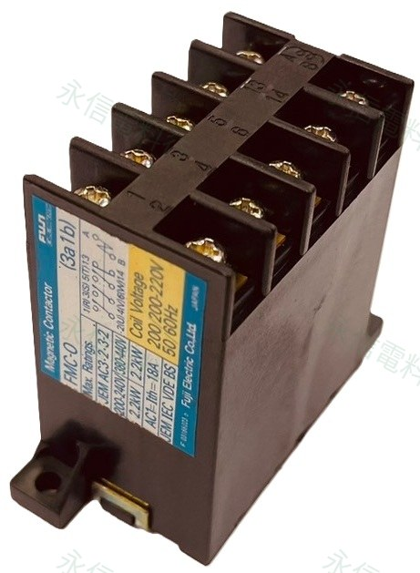

BRAND PRODUCT INDEX
富士電機 FUJI ELECTRIC
目前網站已建立富士電機接觸器、磁力起動器、工業繼電器與 AH164 照光按鈕。接觸器舊、新型號外觀相近時，以完整字母／數字排列與線圈架構為優先核對基準。
 24 個商品頁4 個系列分類
24 個商品頁4 個系列分類AVAILABLE PRODUCT SERIES
已建立商品系列

13 個商品頁富士電機 FUJI ELECTRIC
富士電機 FUJI ELECTRIC電磁接觸器
SC／NEO SC／SUPER MAGNET 與部分舊型接觸器；特別區分 SC-1N 與 SC-N1。
查看系列與全部型號 →
5 個商品頁富士電機 FUJI ELECTRIC
富士電機 FUJI ELECTRIC電磁開關／磁力起動器
SW 系列與接觸器＋熱動過載繼電器組合，線圈與 OL 範圍分開核對。
查看系列與全部型號 →
3 個商品頁富士電機 FUJI ELECTRIC
富士電機 FUJI ELECTRIC工業繼電器
SH-4＋SZ-A22 與 SRC50 舊型繼電器；接點與線圈不跨型號推定。
查看系列與全部型號 →
3 個商品頁富士電機 FUJI ELECTRIC
富士電機 FUJI ELECTRICAH164 照光按鈕開關
紅、黃、綠三種 AH164 正方型照光按鈕開關商品頁。
查看系列與全部型號 →品牌與供應說明
本頁僅整理永信電料行網站目前已建立的商品頁，不代表完整原廠全系列、即時庫存或官方代理資格。舊型／新型替換需依 Fuji Electric 原廠比較資料與實物完整型號逐項核對。